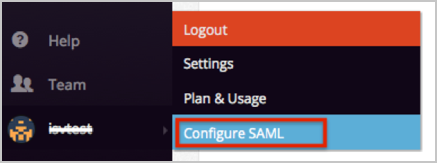
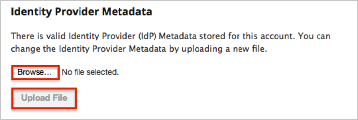
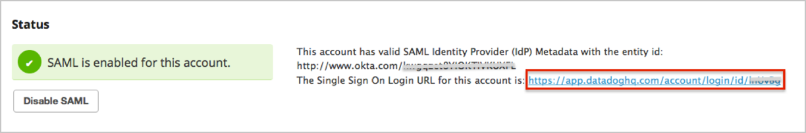
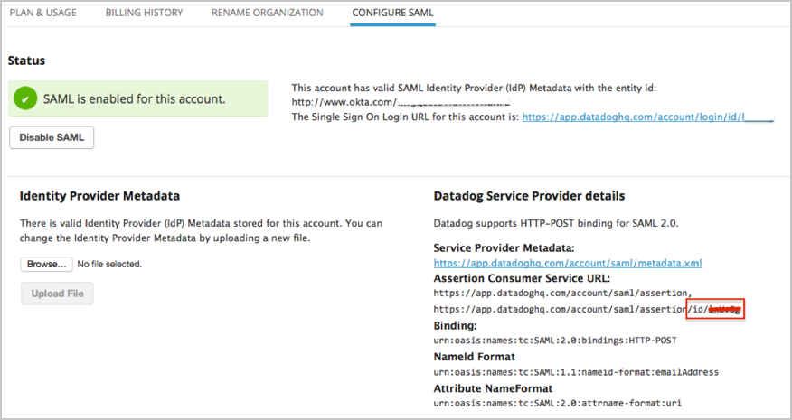
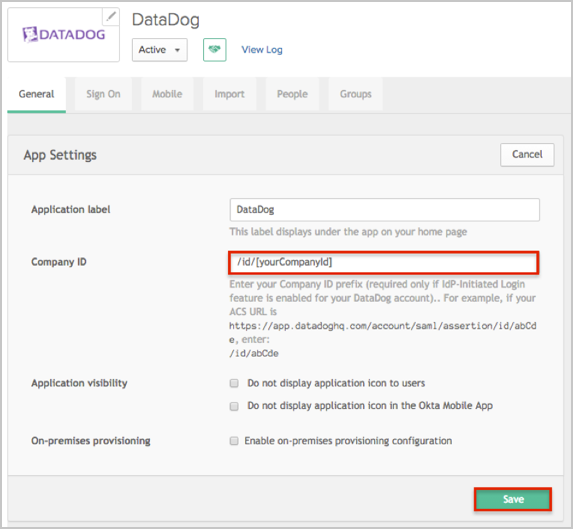

Copy and save the following IdP Metadata show below with the filename metadata.xml.
Sign into the Okta Admin dashboard to generate this value.
Log in to Datadog at https://app.datadoghq.com/account/login with your administrative credentials.
Select the Datadog icon in the bottom right, and then select Configure SAML in the menu that appears, as shown below.

In the Identity Provider Metadata section, select Browse… and navigate to the metadata.xml file you saved in step 1, as shown below. When the file name appears, select Upload File.

Note the Single Sign On Login URL to use for authentication that is shown in the Status section.

If the IdP Initiated Login feature has been activated (optional):
Open your Datadog SAML Configuration page.
Copy your Company ID prefix from the Assertion Consumer Service URL as shown below:
For example, if your ACS URL is https://app.datadoghq.com/account/saml/assertion/id/[yourCompanyId], you need to copy the /id/[yourCompanyId] value.

In Okta, select the General tab for the DataDog app, then click Edit.
Enter your Company ID as shown below:

Click Save.
Done!
Notes:
IdP Initiated Login and Just in Time Provisioning (JIT Provisioning) features are available on request. If you would like access to them, contact Datadog support and describe your scenario. The feature will be available on your account after some configurations on Datadog side. Please refer to http://docs.datadoghq.com/guides/saml/ doc.
IdP-initiated flows, SP-initiated flows, and Just In Time Provisioning (JIT) are all supported.
For the SP-initiated flow: Open your Single Sign On Login URL (see step 6).